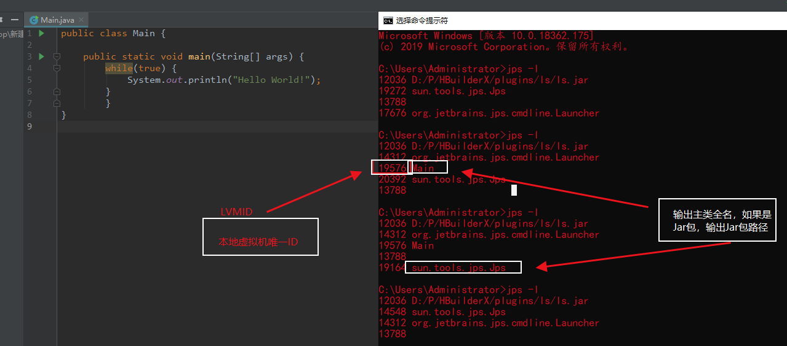
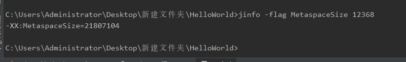
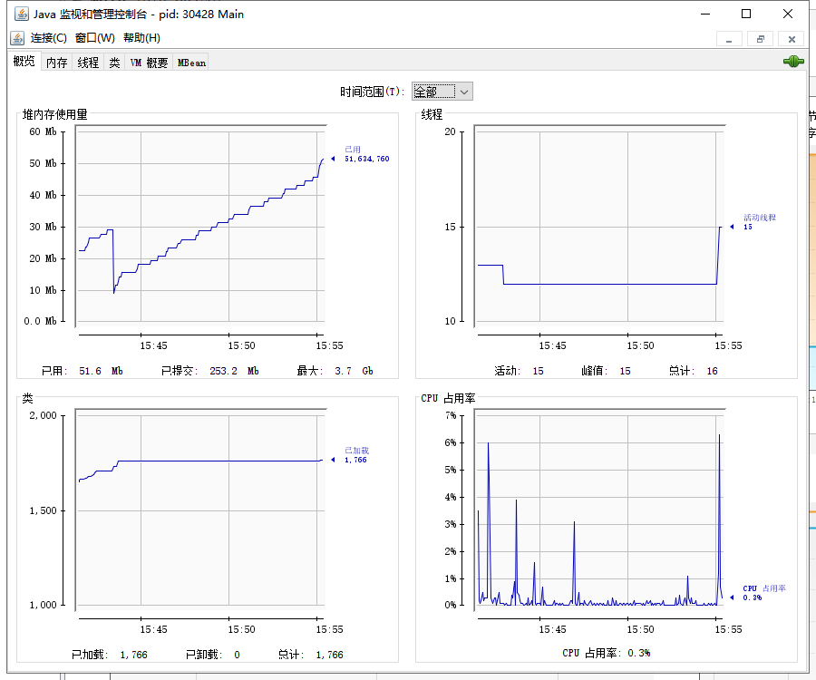
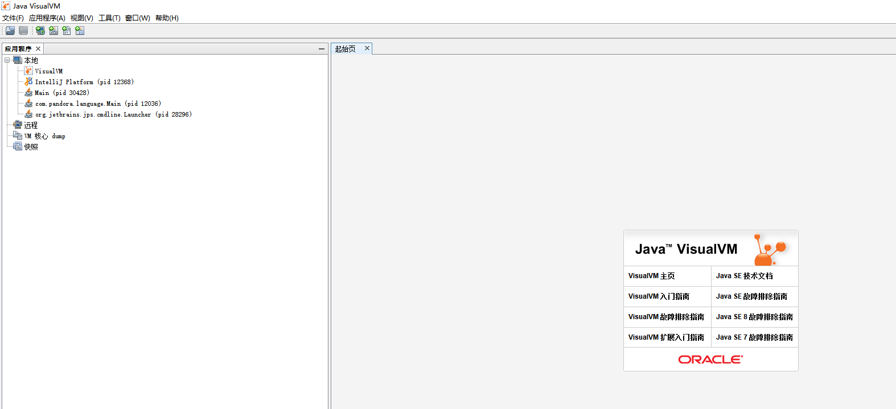
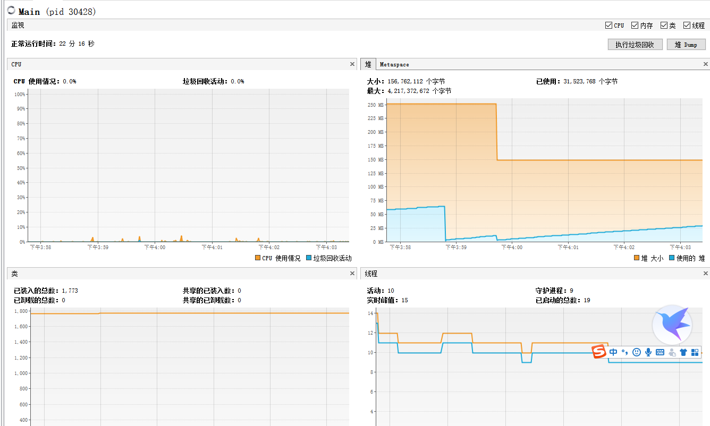

原文连接:https://www.cnblogs.com/noneplus/p/11450699.html
JVM参数配置
大致方向：JVM调优的目的是保证在一定吞吐量的情况下尽可能的减少GC次数，从而减少系统停顿时间，提高服务质量和效率。
其中减少GC次数的原则：
- 将新生代转换成老年代的数量降至最少（及时进行Minor GC回收新生代）
- 减少Full GC 次数
常用参数
-XX:+PrintGCDetails：打印GC的详细信息（冒号之后的+表示打印，-表示不打印）
-XX:+UseSerialGC : 使用串行回收器
-Xmx4000m ：指定堆最大值为4000M（ 等价于-XX：MaxHeapSize）。默认物理内存的1/4
-Xms4000m ：指定堆初始化值为4000M（ 等价于-XX：initialHeapSize）。默认物理内存的1/64
-Xmn2000m ：设置新生代大小为2000M。
-Xss512k：设置栈大小为512k
设置堆内存大小
- -Xmx ：指定堆最大值。默认物理内存的1/4
- -Xms ：指定堆初始化值。默认物理内存的1/64
推荐：通常会将 -Xmx 与 -Xms两个参数配置成相同的值
public class Main {
/**
*堆内存大小配置
* -Xmx4000m 设置最大堆内存为4000m
* -Xms4000m 设置初始化堆内存为4000m
* @param args
*/
public static void main(String[] args) {
System.out.println("堆最大内存："+Runtime.getRuntime().maxMemory()/1024/1024);
System.out.println("可用内存："+Runtime.getRuntime().freeMemory()/1024/1024);
System.out.println("内存总量："+Runtime.getRuntime().totalMemory()/1024/1024);
}
}设置栈大小
-Xss
- 设置单个线程栈的大小，一般默认为 512-1024k
- 等价于 -XX:ThreadStackSize
设置新生代大小
-Xmn ：设置年轻代大小。
整个JVM内存大小=年轻代大小 + 年老代大小 + 持久代大小。持久代一般固定大小为64m，所以增大年轻代后，将会减小年老代大小。
- 此值对系统性能影响较大，Sun官方推荐配置为整个堆的3/8。
设置元空间大小
元空间的本质和永久代类似，都是对 JVM 规范中的方法区的实现。
不过元空间于永久代之间最大区别在于，元空间并不在虚拟中，而是使用本地内存，因此默认情况下，元空间的大小仅受本地内存限制。
- 元空间的默认大小在20m左右，通常会调大一点。
-XX：MetaspaceDetails=1024m
新生代比例大小配置
-XX:SurvivorRatio=8 eden:from:to = 8:1:1 （default）
-XX:SurvivorRatio=2 eden:from:to = 2:1:1
public class Main {
/**
* 新生代比例大小配置
* -Xms20m -Xmx20m -Xmn1m -XX:SurvivorRatio=2 -XX:+PrintGCDetails -XX:+UseSerialGC
* -Xmn1m 新生代最大可用值
*
*
*
* @param args
*/
public static void main(String[] args) {
byte[] b = null;
for (int i = 0; i < 10; i++) {
b = new byte[1 * 1024 * 1024];
}
}
}新生代和老年代比例配置
-XX:NewRatio=2 新生代和老年代的占比为1：2 （default）
public class Main {
/**
* 新生代与老年代比例大小配置
*
* -XX:NewRatio=2 新生代和老年代的占比为1：2
*
* @param args
*/
public static void main(String[] args) {
byte[] b = null;
for (int i = 0; i < 10; i++) {
b = new byte[1 * 1024 * 1024];
}
}
}设置垃圾的最大年龄
-XX:MaxTenuringThreshold=15（default）
新生代对象经过15次的回收就会进入老年代
小结
-Xmx4000m
-Xms4000m
-Xss1024k
-XX:MetaspaceSize=1024m
-XX:+PrintCommandLineFlags
-XX:+PrintGCDetails//使用默认
-Xmn
-XX:SurvivorRatio
-XX:NewRatio
-XX:MaxTenuringThreshold堆内存溢出问题
当程序需要申请内存的时候，由于没有足够的内存，此时就会抛出OutOfMemoryError，这就是内存溢出
堆是存放对象的地方，那么只要在堆中疯狂的创建对象，那么堆就会发生内存溢出。
public class Main {
/**
*-Xms1m -Xmx1m -XX:+PrintGCDetails
*/
public static void main(String[] args) {
for (int i=0;i<100;i++)
{
Byte[] bytes = new Byte[1 * 1024 * 1024]; ///1M = 1024K = 1024*1024 字节
}
}
}增大堆内存
-Xms100m -Xmx100m
栈溢出
通常产生于递归调用
public class Main {
/**
* -Xss10m
*/
private static int count;
public static void count()
{
// count++;
// count();
try
{
count++;
count();
}
catch (Throwable throwable)
{
System.out.println("最大深度："+count);
}
}
public static void main(String[] args) {
count();
}
}内存溢出和内存泄漏
内存溢出发生在申请堆内存空间时，内存不够用了。
比如你需要100M的空间，系统只剩90M了，这就叫内存溢出
内存泄漏是指创建一些对象，比如说IO流，数据库连接未关闭导致内存的持续占用，致使本该回收的内存空间依然被占用。而内存泄漏多了之后，就会导致内存溢出。
JVM命令工具
JVM常用命令
jps：JVM Process Status Tool 虚拟机进程状况工具
jps -l 输出主类全名，如果是Jar包，输出Jar包路径-l : 输出主类全名或jar路径
-q : 只输出LVMID
-m : 输出JVM启动时传递给main()的参数
-v : 输出JVM启动时显示指定的JVM参数
jinfo：查看虚拟机各项参数
jps -l //获取LVMID
//查看打印GC日志的参数
jinfo -flag PrintGCDetails 12368
-XX:-PrintGCDetails
// 冒号后面的-表示未开启GC日志打印，+代表打印

查看MetaspaceSize初始值

- -flag : 输出指定args参数的值
- -flags : 不需要args参数，输出所有JVM参数的值
- -sysprops : 输出系统属性，等同于System.getProperties()
jstat：监视虚拟机运行时状态信息的命令
可以显示出虚拟机进程中的类装载、内存、垃圾收集、JIT编译等运行数据
命令格式
jstat [option] LVMID [interval] [count]- [option] : 操作参数
- LVMID : 本地虚拟机进程ID
- [interval] : 连续输出的时间间隔
- [count] : 连续输出的次数
| 参数 | 含义 |
|---|---|
| -class | 监视类装载、卸载数量、总空间以及类装载所耗费的时间 |
| -gc | 监视Java堆状况，包括Eden区、两个Survivor区、老年代、永久代等的容量、已用空间、GC时间合计等信息 |
| -gccapacity | 监视内容与-gc基本相同，但输出主要关注Java堆各个区域使用到的最大、最小空间 |
| -gcutil | 监视内容与-gc基本相同，但输出主要关注已使用空间占总空间的百分比 |
| -gccause | 与-gcutil功能一样，但是会额外输出导致上一次GC产生的原因 |
| -gcnew | 监视新生代GC状况 |
| -gcnewcapacity | 监视内容与-gcnew基本相同，输出主要关注使用到的最大、最小空间 |
| -gcold | 监视老年代GC状况 |
| -gcoldcapacity | 监视内容与-gcold基本相同，输出主要关注使用到的最大、最小空间 |
| -gcpermcapacity | 输出永久代使用到的最大、最小空间 |
| -compiler | 输出JIT编译器编译过的方法、耗时信息 |
| -printcompilation | 输出已经被JIT编译的方法 |
-class
监视类装载、卸载数量、总空间以及耗费的时间
jstat -class 10524
Loaded Bytes Unloaded Bytes Time
610 1231.7 0 0.0 0.42
Loaded : 加载class的数量
Bytes : class字节大小
Unloaded : 未加载class的数量
Bytes : 未加载class的字节大小
Time : 加载时间
-----------------------------------------------------------------------------------
jstat -class 12036 1000 5 表示每1000毫秒查询一次，一共查询5次
C:\Users\Administrator>jstat -class 12036 1000 5
Loaded Bytes Unloaded Bytes Time
3252 3765.3 0 0.0 2.60
3252 3765.3 0 0.0 2.60
3252 3765.3 0 0.0 2.60
3252 3765.3 0 0.0 2.60
3252 3765.3 0 0.0 2.60- -gc
垃圾回收堆的行为统计
jstat -gc 12036C即Capacity 总容量，U即Used 已使用的容量
- S0C : survivor0区的总容量
- S1C : survivor1区的总容量
- S0U : survivor0区已使用的容量
- S1U : survivor1区已使用的容量
- EC : Eden区的总容量
- EU : Eden区已使用的容量
- OC : Old区的总容量
- OU : Old区已使用的容量
- PC 当前perm的容量 (KB)
- PU perm的使用 (KB)
- YGC : 新生代垃圾回收次数
- YGCT : 新生代垃圾回收时间
- FGC : 老年代垃圾回收次数
- FGCT : 老年代垃圾回收时间
- GCT : 垃圾回收总消耗时间
- -gccapacity
同-gc，不过还会输出Java堆各区域使用到的最大、最小空间
jstat -gccapacity 12036- NGCMN : 新生代占用的最小空间
- NGCMX : 新生代占用的最大空间
- OGCMN : 老年代占用的最小空间
- OGCMX : 老年代占用的最大空间
- OGC：当前年老代的容量 (KB)
- OC：当前年老代的空间 (KB)
- PGCMN : perm占用的最小空间
- PGCMX : perm占用的最大空间
- -gcutil
同-gc，不过输出的是已使用空间占总空间的百分比
jstat -gcutil 12036
S0 S1 E O M CCS YGC YGCT FGC FGCT GCT
55.54 0.00 4.79 52.70 - - 50 0.823 6 0.068 0.891- -gccause
垃圾收集统计概述（同-gcutil），附加最近两次垃圾回收事件的原因
jstat -gccause 12036
S0 S1 E O M CCS YGC YGCT FGC FGCT GCT LGCC GCC
55.54 0.00 7.99 52.70 - - 50 0.823 6 0.068 0.891 Allocation Failure No GC
- LGCC：最近垃圾回收的原因
- GCC：当前垃圾回收的原因
- -gcnew
统计新生代的行为
C:\Users\Administrator>jstat -gcnew 12036
S0C S1C S0U S1U TT MTT DSS EC EU YGC YGCT
13056.0 13056.0 7251.9 0.0 1 6 6528.0 104960.0 19574.8 50 0.823- TT：Tenuring threshold(提升阈值)
- MTT：最大的tenuring threshold
- DSS：survivor区域大小 (KB)
- -gcnewcapacity
新生代与其相应的内存空间的统计
C:\Users\Administrator>jstat -gcnewcapacity 12036
NGCMN NGCMX NGC S0CMX S0C S1CMX S1C ECMX EC YGC FGC
131072.0 131072.0 131072.0 13056.0 13056.0 13056.0 13056.0 104960.0 104960.0 50 6
- NGC:当前年轻代的容量 (KB)
- S0CMX:最大的S0空间 (KB)
- S0C:当前S0空间 (KB)
- ECMX:最大eden空间 (KB)
- EC:当前eden空间 (KB)
- -gcold
监视老年代的GC状况
C:\Users\Administrator>jstat -gcold 12036
MC MU CCSC CCSU OC OU YGC FGC FGCT GCT
- - - - 131072.0 69073.6 50 6 0.068 0.891- -gcoldcapacity
统计老年代的大小和空间
C:\Users\Administrator>jstat -gcoldcapacity 12036
OGCMN OGCMX OGC OC YGC FGC FGCT GCT
131072.0 655360.0 131072.0 131072.0 50 6 0.068 0.891- -printcompilation
输出已经被JIT编译的方法
C:\Users\Administrator>jstat -printcompilation 12036
Compiled Size Type Method
2537 30 1 java/io/ExpiringCache$1 removeEldestEntry- Compiled：被执行的编译任务的数量
- Size：方法字节码的字节数
- Type：编译类型
- Method：编译方法的类名和方法名。类名使用”/” 代替 “.” 作为空间分隔符. 方法名是给出类的方法名. 格式是一致于HotSpot - XX:+PrintComplation 选项
jmap：生成堆转储快照
jmap -dump:live,format=b,file=dump.hprof 12233
format指定输出格式，live指明是活着的对象,file指定文件名-heap
打印heap的概要信息，GC使用的算法，heap的配置及wise heap的使用情况,可以用此来判断内存目前的使用情况以及垃圾回收情况
jmap -heap 28920jhat: 分析jmap生成的dump
jhat内置了一个微型的HTTP/HTML服务器，生成dump的分析结果后，可以在浏览器中查看。在此要注意，一般不会直接在服务器上进行分析，因为jhat是一个耗时并且耗费硬件资源的过程，一般把服务器生成的dump文件复制到本地或其他机器上进行分析。
jstack: 用于生成java虚拟机当前时刻的线程快照
线程快照是当前java虚拟机内每一条线程正在执行的方法堆栈的集合，生成线程快照的主要目的是定位线程出现长时间停顿的原因，如线程间死锁、死循环、请求外部资源导致的长时间等待等。
线程出现停顿的时候通过jstack来查看各个线程的调用堆栈，就可以知道没有响应的线程到底在后台做什么事情，或者等待什么资源。
如果java程序崩溃生成core文件，jstack工具可以用来获得core文件的java stack和native stack的信息，从而可以轻松地知道java程序是如何崩溃和在程序何处发生问题。
另外，jstack工具还可以附属到正在运行的java程序中，看到当时运行的java程序的java stack和native stack的信息, 如果现在运行的java程序呈现hung的状态，jstack是非常有用的。
- -F : 当正常输出请求不被响应时，强制输出线程堆栈
- -l : 除堆栈外，显示关于锁的附加信息
- -m : 如果调用到本地方法的话，可以显示C/C++的堆栈
jstack -F 12233
JVM可视化工具
位于JDK的bin目录下
JConsole
jconsole
VisualVM
jvisualvm
